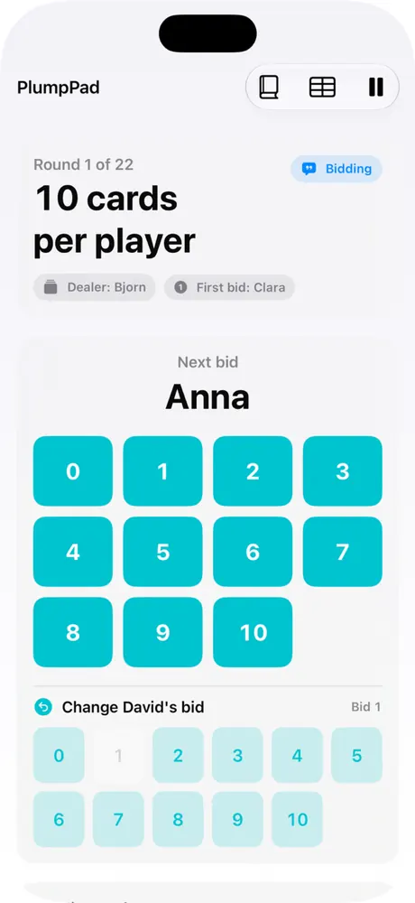
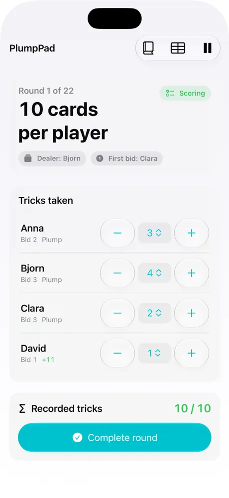
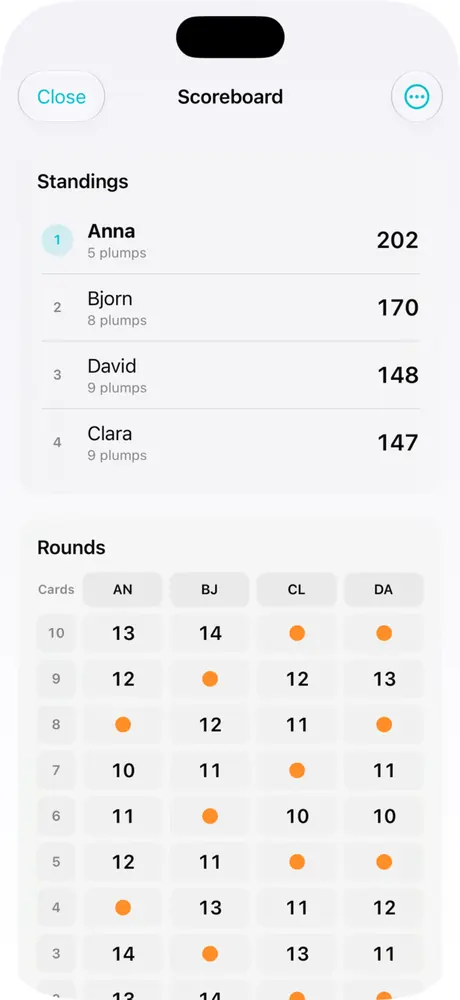

Bidding in the right order
See the current dealer and next bidder. The illegal final dealer bid is blocked automatically.
PlumpPad keeps track of bids, tricks and scores, so everyone can focus on the cards and the game.
A dedicated scorekeeper, not a virtual card game. You play with real cards; PlumpPad keeps the score.
See the current dealer and next bidder. The illegal final dealer bid is blocked automatically.
Record tricks taken and let PlumpPad calculate points, missed bids and standings.
Active games are saved on the device, ready to continue another time.
Save player names for future games, or type new ones each time.
Choose whether completed games remain in your history, and delete them at any time.
Print PDF score sheets on A4 or Letter, or export CSV using iOS.
Screenshots from the supplied iPhone version of PlumpPad.



